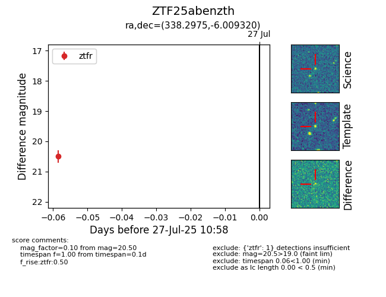

Target ZTF25abenzth at 2025-07-27 10:58, see:
FINK: fink-portal.org/ZTF25abenzth
Lasair: lasair-ztf.lsst.ac.uk/objects/ZTF25abenzth
ALeRCE: alerce.online/object/ZTF25abenzth
alt names
ZTF25abenzth (ztf,fink)
coordinates:
equatorial (ra, dec) = (338.2975,-6.00932)
galactic (l, b) = (59.3490,-50.95268)
photometry
last ztfr=20.50
1 ztfr detections
